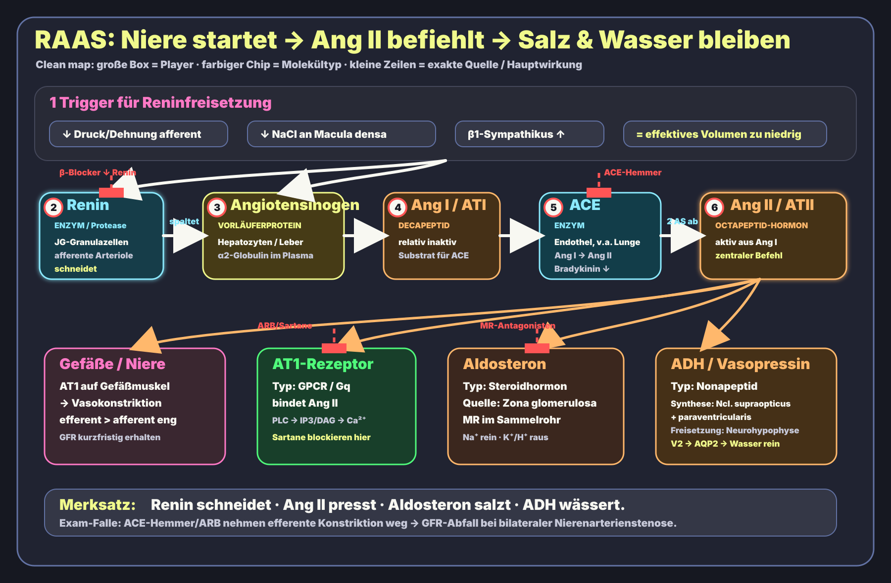
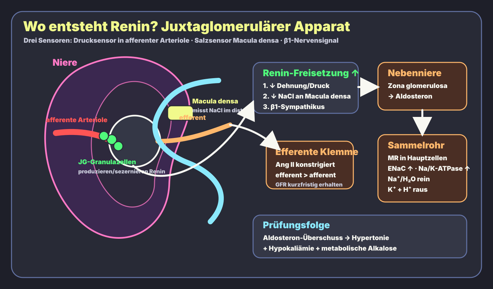

Renin
- Quelle
- Juxtaglomeruläre Granulazellen [JG-Granulazellen] = modifizierte glatte Muskelzellen in der Wand der afferenten Arteriole.
- Trigger
- ↓ Dehnung/Druck, ↓ NaCl an Macula densa, β1-Sympathikus.
- Effekt
- Spaltet Angiotensinogen → Angiotensin I.
Physiologie · Niere · Endokrinologie · High Yield
Niere misst zu wenig Druck/Salz → Renin startet die Kaskade → Ang II presst → Aldosteron salzt → ADH wässert.
Ein Bild für die ganze Story. Die exakten Fakten stehen zusätzlich darunter als Wahrheitslayer.

Das zweite Diagramm zoomt auf den juxtaglomerulären Apparat: genau dort wird Renin freigesetzt.

| Player | Typ | Exakte Produktion / Freisetzung | Bindung / Ziel | Effekt |
|---|---|---|---|---|
| Renin | Aspartyl-Protease; Enzym | Juxtaglomeruläre Granulazellen [JG-Granulazellen], modifizierte glatte Muskelzellen in der Wand der afferenten Arteriole | Angiotensinogen | Angiotensinogen → Angiotensin I; RAAS-Start |
| Angiotensinogen | α2-Globulin; Vorläuferprotein | Hepatozyten der Leber; zirkuliert im Plasma | Substrat für Renin | Vorläufer für Ang I |
| Angiotensin I / ATI | Decapeptid | Entsteht aus Angiotensinogen durch Renin im Blut/Plasma | Substrat für ACE | Relativ inaktiv; Vorstufe von Ang II |
| ACE | Zink-Metalloprotease | Endothelgebunden, klassisch pulmonales Kapillarendothel; auch systemische Endothelien | Ang I und Bradykinin | Ang I → Ang II; Bradykinin-Abbau |
| Angiotensin II / ATII | Octapeptid-Peptidhormon | Aus Ang I durch ACE; lokal auch Gewebe-RAAS | v. a. AT1-Rezeptor; AT2 weniger prüfungszentral | Vasokonstriktion, efferente Arteriole eng, Aldosteron ↑, ADH/Durst ↑, proximal Na⁺ ↑ |
| AT1-Rezeptor | Gq-GPCR | Rezeptor auf Gefäßmuskel, Niere, Zona glomerulosa, ZNS | Ang II | IP3/DAG/Ca²⁺ ↑ → Vasokonstriktion und Aldosteronfreisetzung |
| Aldosteron | Steroidhormon; Mineralokortikoid | Zona glomerulosa der Nebennierenrinde; stimuliert durch Ang II und Hyperkaliämie | Intrazellulärer Mineralokortikoid-Rezeptor im Sammelrohr/distalen Nephron | ENaC und Na⁺/K⁺-ATPase ↑; Na⁺/Wasser rein, K⁺/H⁺ raus |
| ADH / Vasopressin | Nonapeptid-Peptidhormon | Synthese: Ncl. supraopticus + paraventricularis im Hypothalamus; Freisetzung: Neurohypophyse | V2 [Gs] im Sammelrohr; V1 [Gq] an Gefäßen | V2: AQP2 ↑ → Wasserretention; V1: Vasokonstriktion |
| ANP/BNP | Natriuretische Peptidhormone | ANP: Vorhof; BNP: Ventrikel bei Dehnung | Natriuretische Peptidrezeptoren | Gegenspieler: Natriurese, Vasodilatation, Renin/Aldosteron ↓ |
| Stelle | Beispiel | Mechanismus | Prüfungsfalle |
|---|---|---|---|
| β1 an JG-Zellen | β-Blocker | Reninfreisetzung ↓ | Sympathikus stimuliert Renin über β1, nicht α1. |
| Renin | Aliskiren | direkter Renin-Inhibitor | Reserve; nicht mit ACE-Hemmer/ARB bei Diabetes/Niereninsuffizienz kombinieren. |
| ACE | Ramipril, Enalapril | Ang II ↓, Bradykinin ↑ | Husten/Angioödem; Hyperkaliämie; teratogen; Kreatininanstieg möglich. |
| AT1 | Losartan, Valsartan | blockiert AT1-Rezeptor | weniger Bradykinin-Husten; trotzdem Hyperkaliämie und Schwangerschaftsverbot. |
| MR/Aldosteron | Spironolacton, Eplerenon | Mineralokortikoid-Rezeptor-Antagonisten | Hyperkaliämie; Spironolacton antiandrogen → Gynäkomastie. |
| ADH V2 | Tolvaptan; Desmopressin als Agonist | Vaptane blocken Wasserretention; Desmopressin ersetzt ADH | Vaptane bei SIADH; Desmopressin bei zentralem Diabetes insipidus/vWF-Freisetzung. |
Niere denkt „zu wenig Druck“ → Renin ↑, Ang II ↑, Aldosteron ↑. ACE-Hemmer können bei bilateraler Stenose/Einzelniere die GFR stark senken.
Primärer Hyperaldosteronismus: Aldosteron ↑, Renin ↓ → Hypertonie, Hypokaliämie, metabolische Alkalose.
Renin ↑ und Aldosteron ↑: z. B. Nierenarterienstenose, Herzinsuffizienz, Zirrhose.
Ang II konstrigiert bevorzugt efferent → glomerulärer Druck/GFR kurzfristig erhalten, renaler Plasmafluss sinkt, Filtrationsfraktion ↑.
Ang II ↓ und Bradykinin ↑ → Husten/Angioödem. Außerdem Hyperkaliämie, Kreatininanstieg, kontraindiziert in Schwangerschaft.
Na⁺-Retention zieht Wasser nach; K⁺- und H⁺-Verlust erklärt Hypokaliämie + metabolische Alkalose.
Frage: Ein Patient mit bilateraler Nierenarterienstenose erhält Ramipril und entwickelt einen Kreatininanstieg. Welche RAAS-Wirkung wurde blockiert?
Antwort: Angiotensin II hält über bevorzugte efferente Vasokonstriktion den glomerulären Filtrationsdruck aufrecht. ACE-Hemmung nimmt diese efferente Konstriktion weg → GFR fällt.
Selbst gezeichnete Lernschemata, nicht maßstabsgetreu. Für prüfungsnahe Details zu Medikamenten/Kontraindikationen immer mit Kurs/AMBOSS/Via Medici abgleichen.
StatPearls: Physiology, Renin Angiotensin System · StatPearls: ACE Inhibitors · OpenStax: Electrolyte Balance / RAAS